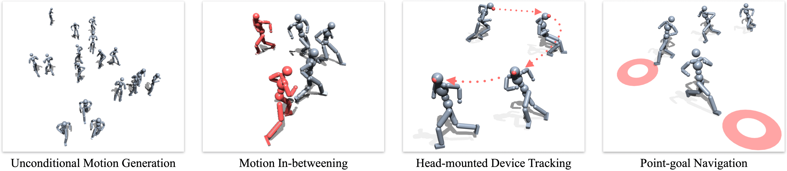
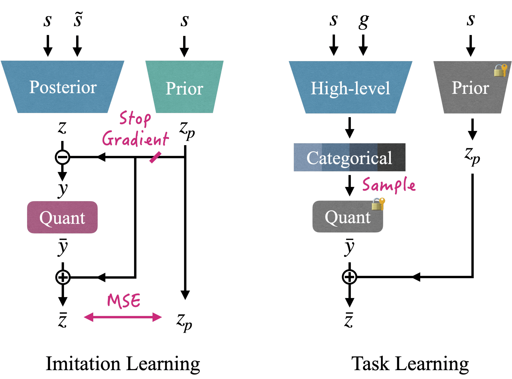

We present a versatile latent representation that enables physically simulated character to efficiently utilize motion priors. To build a powerful motion embedding that is shared across multiple tasks, the physics controller should employ rich latent space that is easily explored and capable of generating high-quality motion. We propose integrating continuous and discrete latent representations to build a versatile motion prior that can be adapted to a wide range of challenging control tasks. Specifically, we build a discrete latent model to capture distinctive posterior distribution without collapse, and simultaneously augment the sampled vector with the continuous residuals to generate high-quality, smooth motion without jittering. We further incorporate Residual Vector Quantization, which not only maximizes the capacity of the discrete motion prior, but also efficiently abstracts the action space during the task learning phase. We demonstrate that our agent can produce diverse yet smooth motions simply by traversing the learned motion prior through unconditional motion generation. Furthermore, our model robustly satisfies sparse goal conditions with highly expressive natural motions, including head-mounted device tracking and motion in-betweening at irregular intervals, which could not be achieved with existing latent representations.

Network architecture for hybrid motion prior. (Left) During the imitation learning phase, posterior and prior network output latent vector \(z\) and \(z_p\) given the current state \(s\) and target state \(\tilde{s}\). Next, the network quantizes the marginal value of \(y=z-z_p\) into \(\bar{y}\), then reconstructs the final latent representation \(\bar{z}\) by biasing the quantized value with \(z_p\). Once trained, the parameters of the codebook and prior network are frozen. (Right) In the task learning phase, high-level policy outputs categorical distribution, and then samples the index for the pretrained codebook. The latent \(\bar{z}\) is then reconstructed with the selected \(\bar{y}\) and continuous vector \(z_p\).
@inproceedings{bae2025versatile,
title={Versatile Physics-based Character Control with Hybrid Latent Representation},
author={Bae, Jinseok and Won, Jungdam and Lim, Donggeun and Hwang, Inwoo and Kim, Young Min},
booktitle={Computer Graphics Forum},
pages={e70018},
year={2025},
organization={Wiley Online Library}
}